Literatura Angolana e Lusofonia
Descubra as vozes que contam a nossa história
A primeira biblioteca digital gratuita dedicada aos autores de Angola, Brasil, Moçambique, Portugal, Cabo Verde, Guiné-Bissau, São Tomé e Príncipe e Timor-Leste. Leia online ou descarregue obras completas.
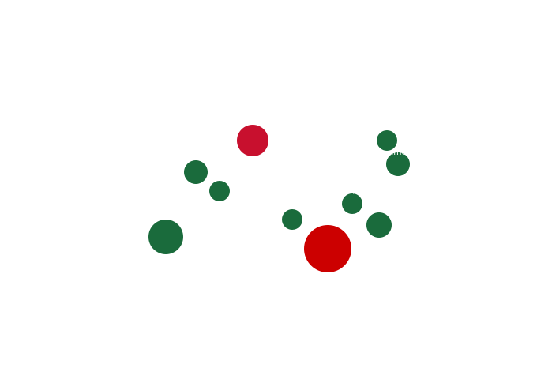
Destaques da Lusofonia
Obras Fundamentais
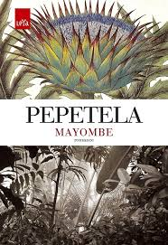
Angola · Romance
Mayombe
Pepetela
★★★★★ (1240)
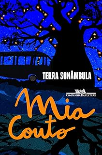
Moçambique · Romance
Terra Sonâmbula
Mia Couto
★★★★★ (2310)
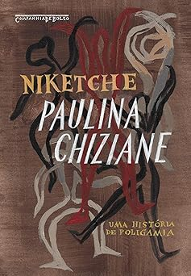
Moçambique · Romance
Niketche
Paulina Chiziane
★★★★½ (980)
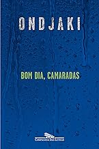
Angola · Romance
Bom Dia Camaradas
Ondjaki
★★★★½ (3100)
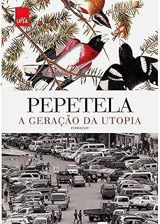
Angola · Romance
Geração da Utopia
Pepetela
★★★★½ (670)
Novos Títulos
Adicionados Recentemente
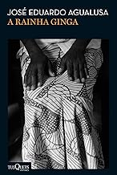
Angola · Romance Histórico
A Rainha Ginga
José Eduardo Agualusa
★★★★½ (2100)
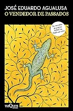
Angola · Romance
O Vendedor de Passados
José Eduardo Agualusa
★★★★½ (730)
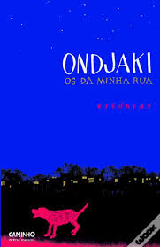
Angola · Contos
Os da minha rua
Ondjaki
★★★★½ (520)
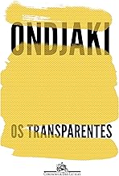
Angola · Romance
Os Transparentes
Ondjaki
★★★★☆ (420)
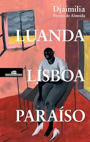
Portugal · Romance
Luanda, Lisboa, Paraiso
Djamila Pereira de Almeida
★★★★½ (1670)
500+
Obras de Autores Lusófonos
40+
Escritores Angolanos
9
Países Representados
100%
Gratuito
Comunidade de Leitores
O que dizem os leitores
★★★★★
Finalmente uma plataforma que valoriza os nossos escritores. Encontrei obras do Pepetela que nunca tinha lido.
Albertina Francisco
Leitora, Luanda
★★★★★
Mia Couto, Agualusa, Ondjaki... todos num só lugar. A minha sala de aula adora.
Manuel Cambinda
Professor, Benguela
★★★★☆
Descobri a poesia de Aldair Rodrigues e a força das autoras moçambicanas. Imperdível.
Helena dos Santos
Jornalista, Huambo
Receba novidades sobre literatura lusófona
Subscreva a nossa newsletter e fique a par de novos lançamentos, artigos e entrevistas com autores.